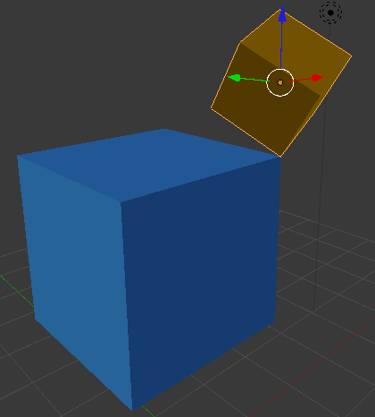
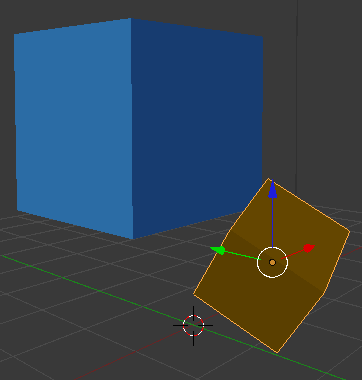
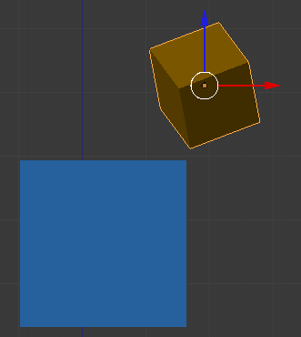
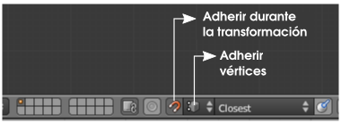
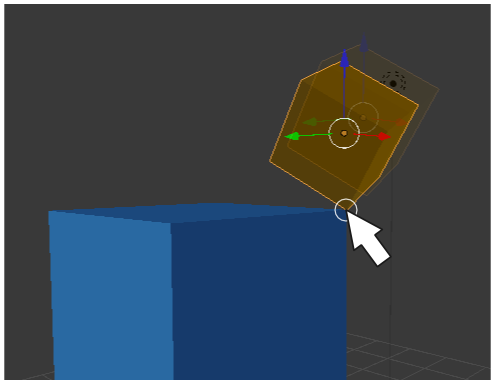

Adherir elemento
Esta es una funcionalidad muy útil en determinadas ediciones. Se trata de los conocidos ajustes o snaps. En esencia se trata de que un elemento muestre la capacidad de atraer hacia sí a otro elemento. Vamos a verlo con un ejemplo sencillo de dos cubos. Los hemos sacado a escena y queremos que dos esquinas queden en contacto de este modo.
Es posible llegar ahí usando lo que ya sabemos sobre adherencias pero sería una labor desquiciante. La opción correcta es la siguiente. Esta es la posición inicial.
Aproximamos los dos vértices...
En la zona de los iconos del editor Vista 3D activamos tal y como se muestra en esta imagen.
Ahora desplazamos el objeto prestando atención a colocar el puntero del ratón en aquel lugar en el que queremos que se produzca la adherencia
En realidad esta es una herramienta con infinidad de posibilidades y que sólo unos buenos ratos de experimentación nos darán la soltura necesaria para sacarle el mayor partido posible.
Tendremos en cuenta que esta herramienta es útil tanto en Modo Objeto  como en Modo Edición
como en Modo Edición  (podemos afirmar con seguridad que en este otro modo es mucho más útil).
(podemos afirmar con seguridad que en este otro modo es mucho más útil).
Posible sitiación extraña
Blender no obedece a ninguna lógica y los objetos se van de aquí para allá al tratar de moverlos.
Nos hemos dejado activada la herramienta Adherir elemento.